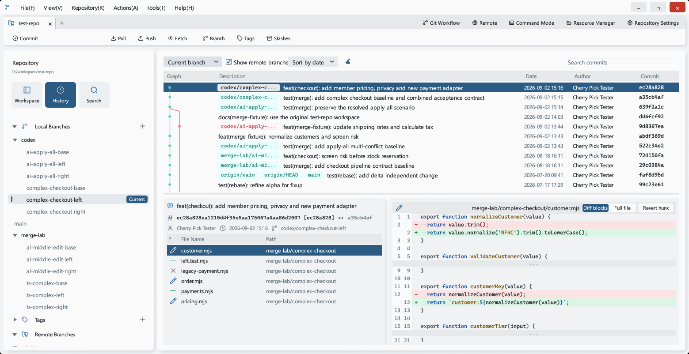
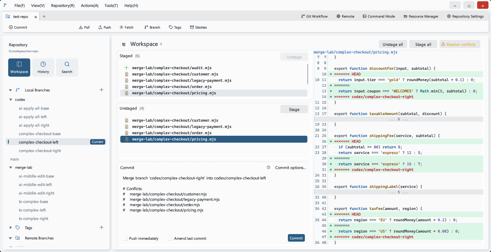
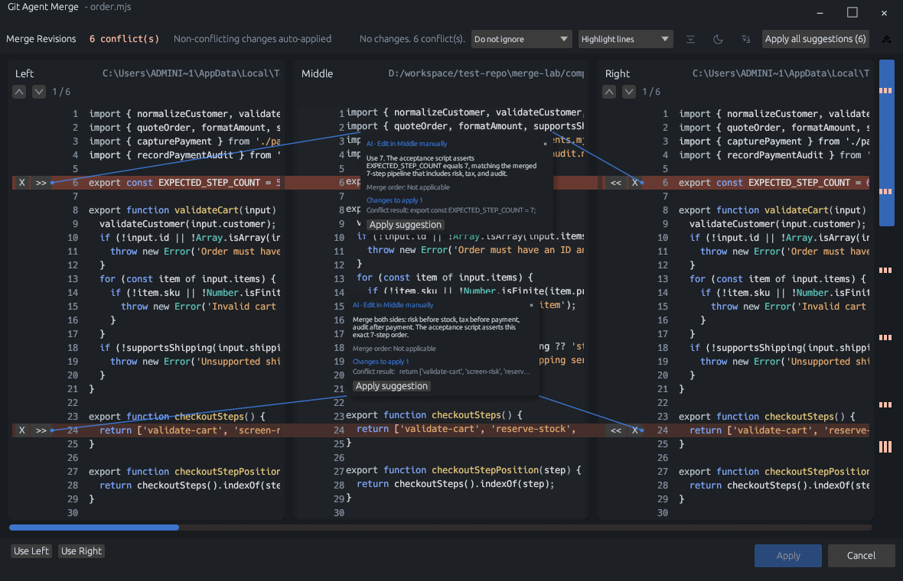

改了什么，一眼明白。
已暂存与未暂存改动清晰分开。批量选择文件、审查双栏差异，让每次提交都恰到好处。
改动、历史、分支与冲突，终于清晰地在一起。一个轻快的原生 Git 客户端，让你专注代码，而不是工具。

把日常开发需要的 Git 能力放在手边。
不打断思路，也不隐藏细节。
已暂存与未暂存改动清晰分开。批量选择文件、审查双栏差异，让每次提交都恰到好处。
沿着提交图回看项目演进，按文件搜索提交。分支、标签、储藏和交互式变基，都有清晰的操作路径。
独立三方合并编辑器，让两边的改动与最终结果同时可见。逐个处理冲突，随时撤销和重做。
Git Flow · Git LFS · Submodules · Subtrees · 补丁管理 · .gitignore 规则解释

让 AI 帮你理解冲突，解释为什么这样合并。建议可以逐条审查，也可以一次应用；最终保存之前，决定权始终在你。
兼容 OpenAI Chat Completions 与 Claude Messages API。
批量处理可执行建议，遇到失效或冲突则整批不应用。
先检查合并结果，再由你保存并完成合并。

以上均为真实应用截图，保留原始界面；AI 输出仅展示此次测试结果，不代表每次分析都会得到相同建议。
x64 · .exe
下载 Windows 版运行安装程序即可Apple Silicon + Intel · .dmg
下载 macOS 版通用架构，拖入应用程序目录Debian / Ubuntu amd64 · .deb
下载 Linux 版其他发行版可从源码构建安装前请先安装 Git。下载来自 GitHub Releases；网络受限时，请前往发布页重试。
需要。Git Agent 使用系统中已安装的 Git，请确认终端里可以运行 git --version。远程操作使用你现有的 Git / SSH 凭据配置。
不需要。日常提交、分支、历史、差异和手动合并均可独立使用。AI 是可选辅助功能，需要自备兼容的模型服务，服务商可能收取调用费用。
发起 AI 分析时，文件内容、冲突上下文、相关源码和 Git 历史可能发送给你配置的模型服务商。请先确认数据政策与仓库规范，不要在未获许可时发送私有代码。
当前安装包使用临时签名，尚未经过 Apple 公证。请先核实下载来源，再按 Apple 官方说明操作，不要关闭系统级安全检查。 查看 Apple 指南 ↗
你的支持，会变成下一次更好的体验。
提建议、报问题、贡献代码，也一样让项目走得更远。